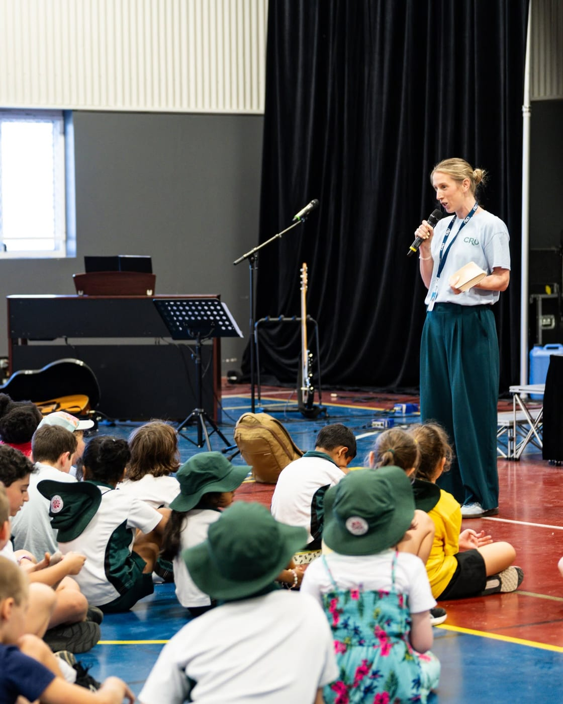

Making it personal
8:15am Morning Devotions
Before the first bell for lessons, primary students gather with their class teacher for a short devotion. It's unhurried — a story, a question, space for a child to say what's actually on their mind that morning.
This is where pastoral care starts: not in a program, but in the first ten minutes of the day.